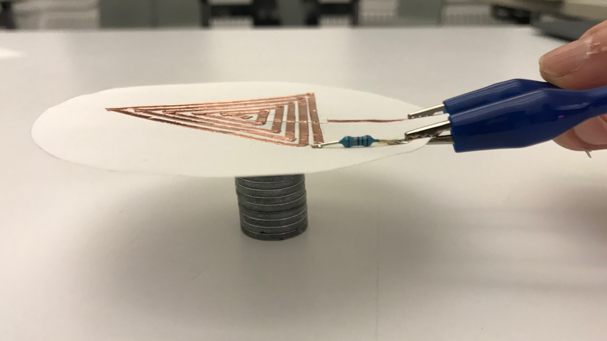

Speakers Swatches
These speaker "swatches" are made of vellum, and a copper tape coil. When an audio signal is sent through the coil, a fluctuating magnetic field is created. When this field interacts with a magnet, electrical energy is converted into vibrations in the vellum, which then causes vibrations in the surrounding. Those vibrations in air are what we perceive as sound.

Each speaker includes a copper tape coil and a 10 Ohm resistor on vellum.

Speaker swatch, neodymium magnets, LiPo battery, audio signal from computer.
Speaker swatch interacting with magnets.
The copper coil, wound tightly, acts as an electromagnet. When we send an audio signal through this electromagnet, we create a fluctuating magnetic field. This field interacts with a magnet, causing the vellum to vibrate. When the vellum vibrates, it moves the air around it: this systemmatic movement of air is what we perceive as sound.

A .4mm birch plywood iteration includes a longer and tighter copper coil.